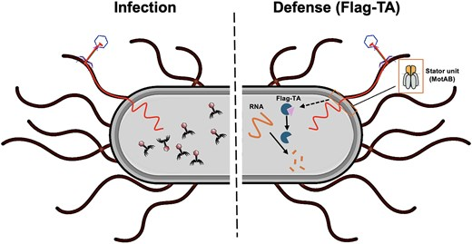
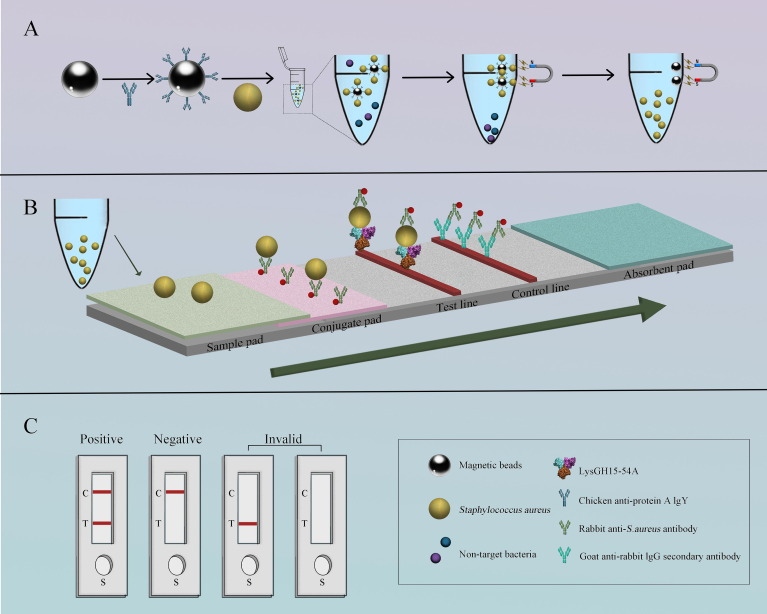
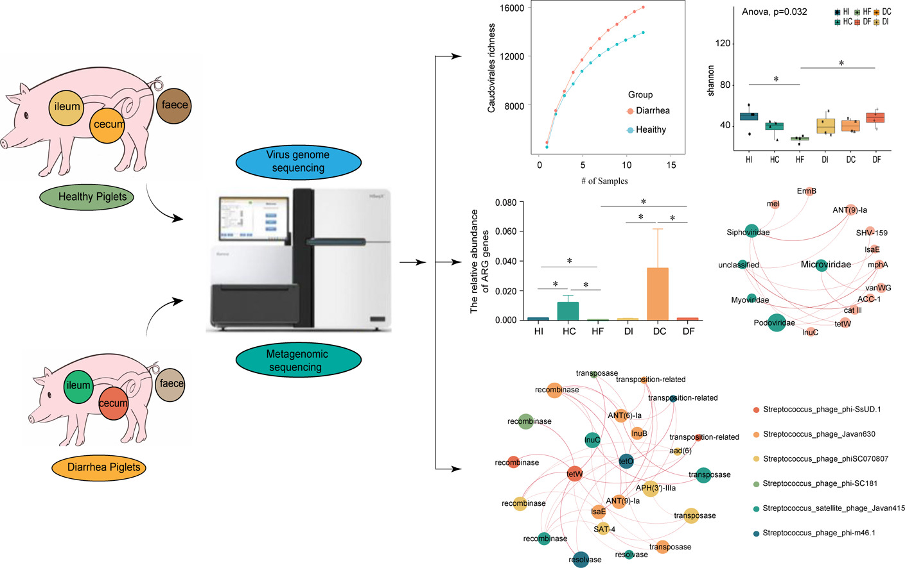
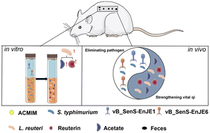
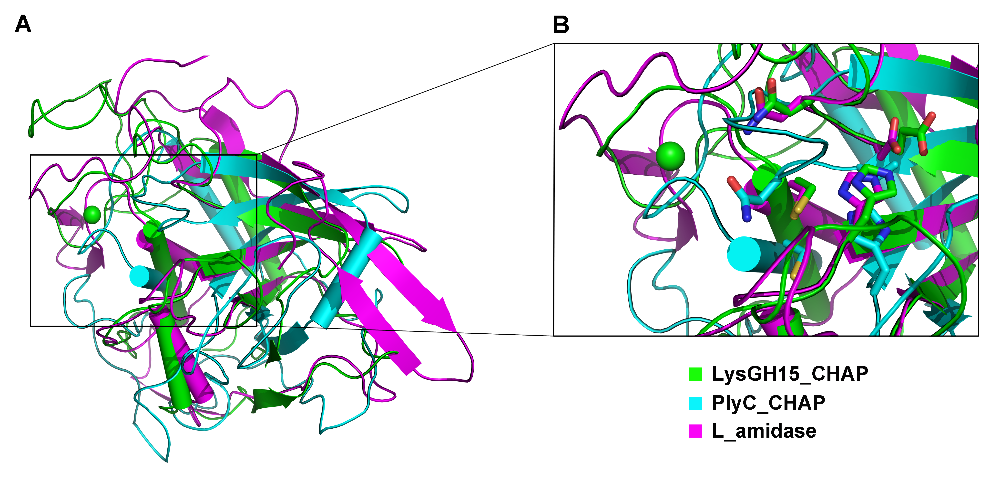

Our laboratory focuses on understanding the complex interactions between phages and bacteria, and leveraging this knowledge to develop novel strategies for combating bacterial infections and detecting pathogens.

Our research has uncovered intricate aspects of the evolutionary arms race between phages and bacteria. A highlight was discovering that phage X1 can co-opt the bacterial flagellum of Yersiniafor DNA injection, a unique infection route. In response, we identified a corresponding defense mechanism where the host bacterium senses this flagellum-mediated invasion and activates a flagellum-dependent toxin-antitoxin system (Flag-TA) to initiate an abortive infection, revealing a novel defense paradigm linked to the flagellar apparatus . We have also characterized receptor binding proteins, such as OmpC for phage GH-K3, to understand the molecular basis of phage susceptibility and bacterial resistance in pathogens like Klebsiella pneumoniae.

Our lab is pioneering the use of phage lysins as robust, antibody-alternative recognition elements for rapid pathogen detection. We engineered the lysin LysGH15 and its catalytically inactive mutant (LysGH15-C54A) to develop sensitive, specific platforms for Staphylococcus aureus. We successfully integrated IgY-coated immunomagnetic beads with a gold-based lateral flow strip (IMBs-GICA) for 35-minute detection, combined the mutant lysin with bio-layer interferometry for real-time, label-free detection in 12 minutes, and created a fluorescent fusion protein (LysGH15-C54A-EGFP) for dual-site recognition and fluorescence-based quantification within an hour. These platforms demonstrate high sensitivity and successful application in clinical samples, establishing lysins as powerful tools for point-of-care diagnostics.

Our work in gut viromics, particularly in piglets, has established the gut phageome as a critical reservoir for antimicrobial resistance genes (ARGs) and virulence factors. We found that numerous phage contigs carry ARGs, often co-located with mobile genetic element genes, facilitating horizontal transfer. A key discovery is that diarrheal disease acts as a major driver, dynamically reshaping the phage and bacterial communities, enriching for phage sequences carrying ARGs and MGEs, and expanding the diversity of broad-host-range phages, thereby exacerbating the risk of ARG spread to potential pathogens. This work underscores the ecological role of phages in antibiotic resistance dissemination within animal microbiomes.

A central focus of our lab is developing biological agents to combat multidrug-resistant infections. We have demonstrated the efficacy of the lysin LysGH15 against S. aureusbiofilms and in a murine necrotizing pneumonia model. For Klebsiella pneumoniae, we isolated specific phages and characterized their depolymerases (e.g., Depo16, Depo32), which strip the protective capsule, sensitizing bacteria to phagocytosis and protecting mice from bacteremia and pneumonia. We also explore synergistic phage-antibiotic combinations. Beyond these, we identified broad-spectrum agents like lysin AVPL, effective against MDR Streptococcus suis, and Lys19, active across Clostridium perfringensand S. suis. Furthermore, we pioneered a combined "phage cocktail and fecal microbiota transplantation" strategy, which effectively cleared Salmonellainfection and restored gut health, representing a novel "anti-pathogen and pro-microbiome" therapeutic approach.

Our research delves into the molecular mechanisms governing the activity of phage-derived enzymes. A prime example is our detailed structural and functional analysis of the lysin LysGH15. We determined that its bacteriolytic activity is uniquely dependent on calcium ions. Structural elucidation revealed that this calcium acts as a crucial switch, stabilizing an "EF-hand-like" domain that is essential for the formation of the active, oligomeric state of the enzyme. This work provides a deep understanding of the regulatory mechanism behind its potent lytic activity and informs the rational design of engineered lysins.